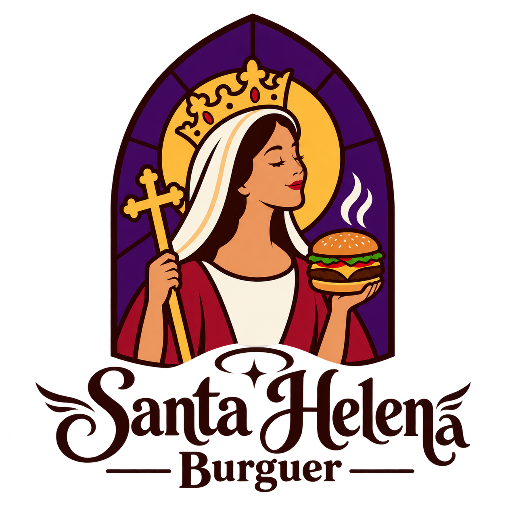
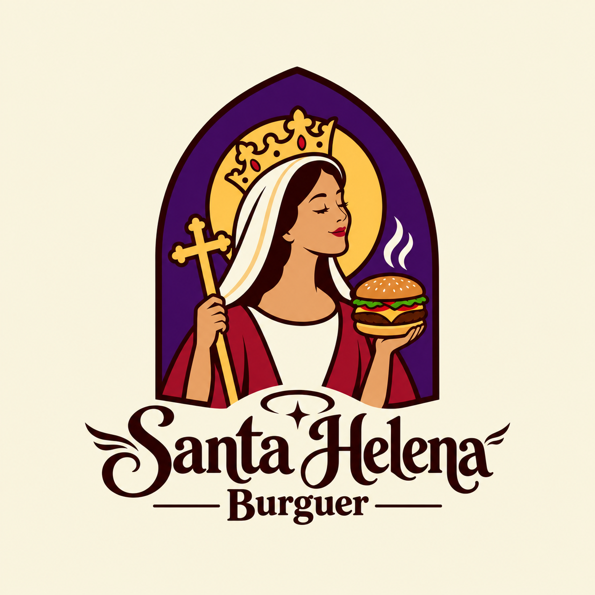

Santa Clássico
Hambúrguer de 150g, queijo prato, alface, tomate e molho da casa.
R$ 28,00
Santa HelenaCarne suculenta, pão macio e ingredientes frescos, preparados na hora. Aqui cada mordida é uma bênção.
Ver cardápioTodos os lanches vêm com batata rústica.
Hambúrguer de 150g, queijo prato, alface, tomate e molho da casa.
R$ 28,00Hambúrguer de 150g, muito bacon crocante, cheddar e cebola caramelizada.
R$ 34,00Dois hambúrgueres de 150g, queijo duplo, picles e molho especial.
R$ 39,00Hambúrguer de 150g, queijo pepper jack, jalapeño e maionese defumada.
R$ 33,00Hambúrguer de grão-de-bico, rúcula, tomate seco e queijo coalho.
R$ 30,00Porção de batata rústica com cheddar e bacon, para dividir.
R$ 22,00
A Santa Helena nasceu da vontade de servir um hambúrguer feito com carinho, do jeito que a gente gosta de comer em casa.
O nome é uma homenagem à fé e à tradição da nossa gente. O vitral do nosso logo lembra que boa comida também une as pessoas à mesa.
Trabalhamos com carne selecionada, pães frescos e molhos feitos aqui mesmo, todos os dias.
Rua Exemplo, 123
Centro
Terça a domingo
18h às 23h
(00) 00000-0000
@santahelenaburguer